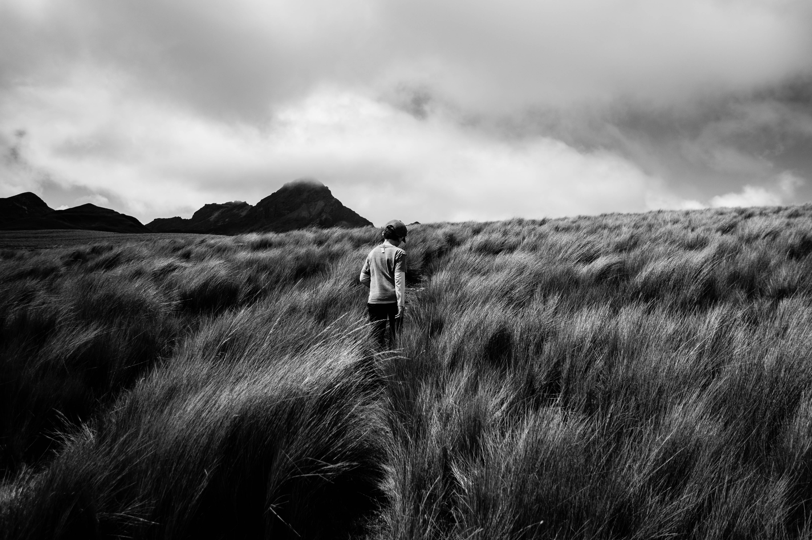
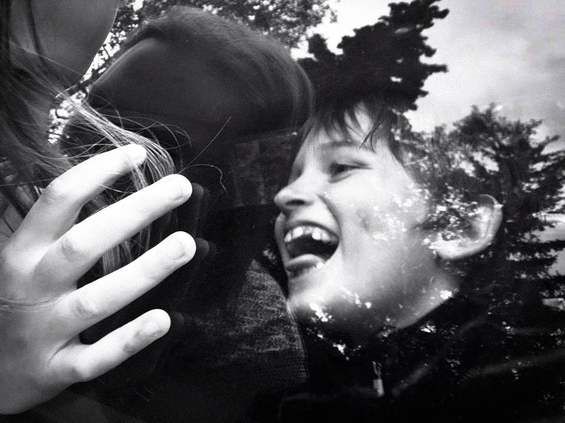

♖
Photography
In my spare time I enjoy capturing mostly landscape and portrait photographs with my trust Fujifilm X-Pro1. Here are a few of my photos, arranged in no particular order.

Sam walking through grasslands in the Ecuadorian Andes.
Winter 2015.
F2.8, 1/4,000s exposure, 18mm (27mm equivalent on 50mm film).

Photograph of my friend Francesca, in Camden Town, London.
Fall 2016.
F1.6, 1/125s exposure, 35mm (55mm equivalent on 50mm film).

Photograph of my friend Preeti, at her home in Kathmandu, Nepal, celebrating Diwali, the festival of lights.
Fall 2016.
F1.4, 1/125s exposure, 35mm (55mm equivalent on 50mm film).

Photograph of Lassen National Park at sunset.
Summer 2016.
F16, 1/500s exposure, 18mm (27mm equivalent on 50mm film).

Photograph of a fraternity party during the GreenKey event at Dartmouth College.
Spring 2016.
Lost metadata, but most likely F16, 1/2000s exposure, 18mm (27mm equivalent on 50mm film).

Photograph of Mt. St. Helens National Park around 2pm.
Summer 2016.
F16, 1/500s exposure, 18mm (27mm equivalent on 50mm film).

Photograph of my friend Riya looking out the window.
Winter 2016.
F1.4, 1/125s exposure, 35mm (55mm equivalent on 50mm film).

Photograph of my dad petting a stingray at the Phoenix Zoo.
Fall 2016.
F2.8, 1/1,000s exposure, 18mm (27mm equivalent on 50mm film).

And last but not least, one of my favorite photographs I've ever taken: a picture of my siblings teasing one another through the car window glass. I took this photo with my iPhone 6, and edited it on my iPhone in the built-in Photos app. It's easier to take a great photo with a great camera, but the over-used trope that "the best camera is the one you have on you" is only so oft-employed because it is so clearly true.
Photo captured in Anchorage, Alaska, outside my grandfather Arndt's house, during the summer of 2015.